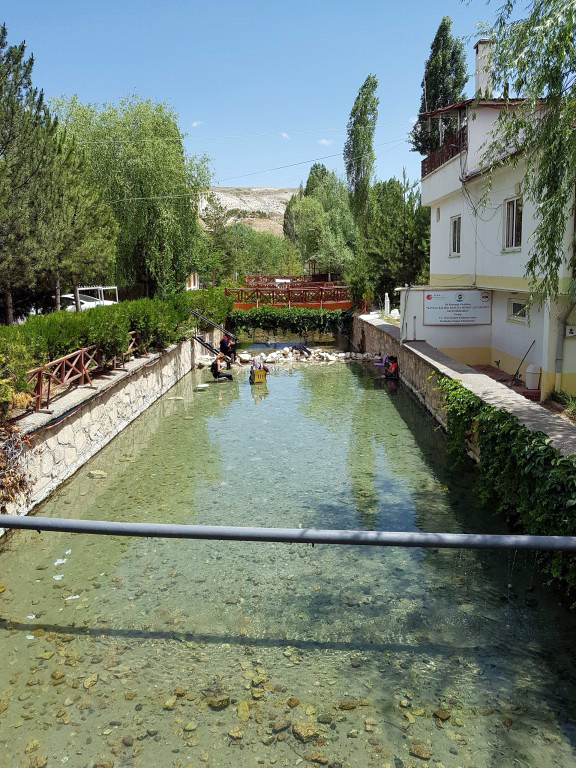

Ellili yıllarda kerpiç binalarla konaklama alanları vardı. Havuzlar ise tahtalarla çevriliydi. Balıklı Kaplıcada altmışlı yıllarda birkaç tane betonarme bina yapıldı ve sadece yaz sezonlarında açıktı. Tedavi olanlar ve günübirlikçiler havuzu beraber kullanırlardı. Seksenli yıllardan sonra yap işlet devret modeli ile Ünsallar A.Ş’ye geçen Balıklı Kaplıca günümüzde modern sistem ile işletilmeye başlandı. Tedavi için gelenlerle onların refakatçileri ve günübirlik kaplıcamızdan faydalanmaya gelenlerin, havuzları birbirinden ayrıldı. Üzeri kapatılan havuzlarla da hem yaz hem kış sezonunda sağlık turizmine hizmet etmektedir.
Kaplıca ve iklim tedavisi uzun yıllardan beri çeşitli hastalıkların tedavisinde uygulanan yöntemlerdendir. Balıklı kaplıca insanların sedef (psoriasis) hastalığının tedavi amacı ile yaygın olarak başvurdukları, suyu, iklimi ve balıklarıyla ilgi çekici bir oluşumdur. Kaplıca ve iklim tedavisi uzun yıllardan beri çeşitli hastalıkların tedavisinde uygulanan yöntemlerdendir. Balıklı kaplıca insanların sedef (psoriasis) hastalığının tedavi amacı ile yaygın olarak başvurdukları, suyu, iklimi ve balıklarıyla ilgi çekici bir oluşumdur.
Geri Dön